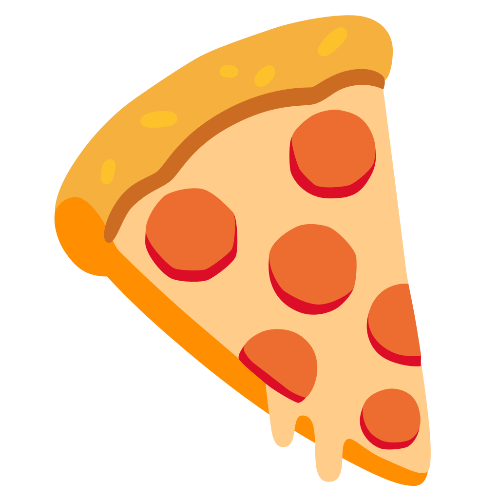
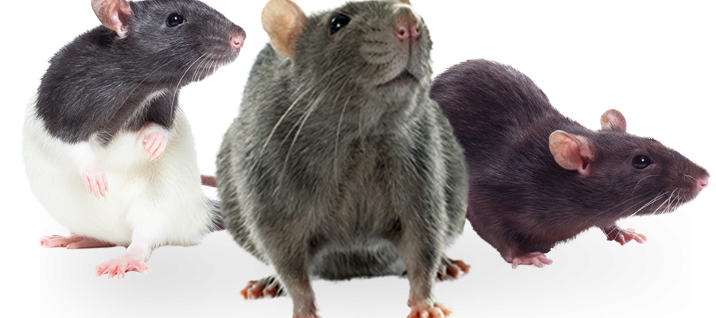
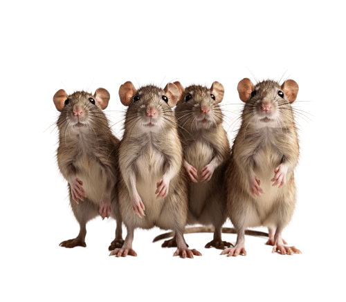
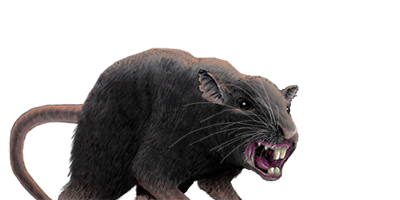

K-PIZZAS (the game) 

MODO INFINITO

MODO POR OLEADAS

JEFE RATA
Proyecto Sistemas de Internet
A continuacion podras acceder a distintas formas de matar ratas, salvar al restaurante y asegurar un futuro prometedor para la nacion
Creado por:
Christopher Eduardo Barrientos Guerra 325785
Samuel Juarez Lucas 325764